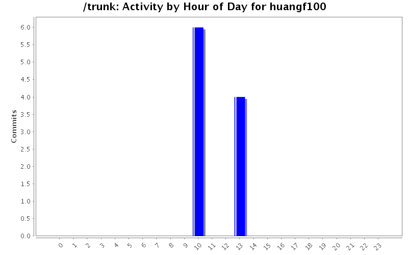
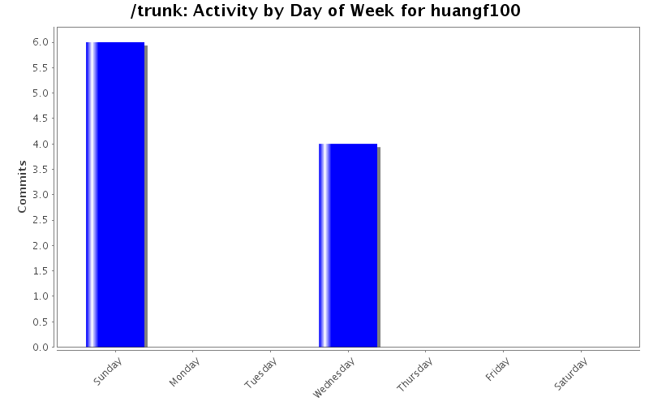
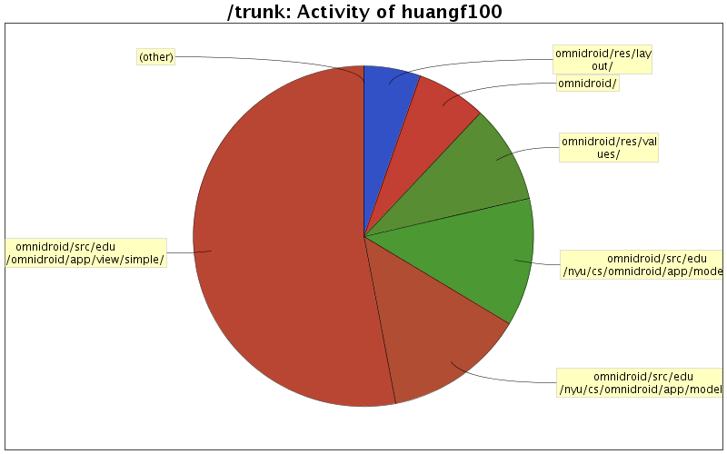

| Directory | Changes | Lines of Code | Lines per Change |
|---|---|---|---|
| Totals | 10 (100.0%) | 149 (100.0%) | 14.9 |
| omnidroid/src/edu/nyu/cs/omnidroid/app/view/simple/ | 4 (40.0%) | 79 (53.0%) | 19.7 |
| omnidroid/src/edu/nyu/cs/omnidroid/app/model/ | 1 (10.0%) | 20 (13.4%) | 20.0 |
| omnidroid/src/edu/nyu/cs/omnidroid/app/model/db/ | 1 (10.0%) | 18 (12.1%) | 18.0 |
| omnidroid/res/values/ | 2 (20.0%) | 14 (9.4%) | 7.0 |
| omnidroid/ | 1 (10.0%) | 10 (6.7%) | 10.0 |
| omnidroid/res/layout/ | 1 (10.0%) | 8 (5.4%) | 8.0 |

Adds SettingsActivity. Fixes issue #80
93 lines of code changed in 6 files:
issue #38 (restore to defaults) fixed.
56 lines of code changed in 4 files: